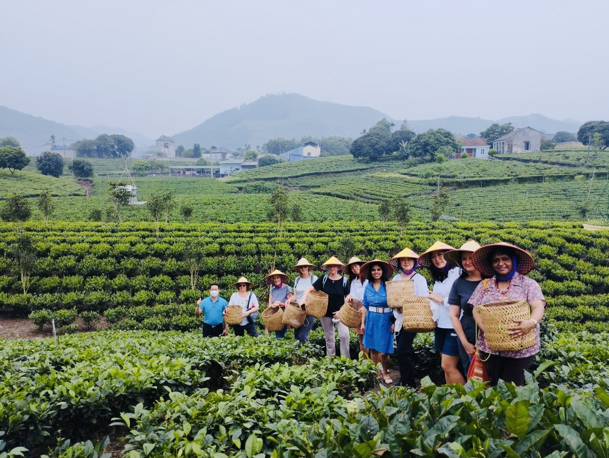

VĂN HÓA TRÀ
Một chén trà, cả một miền văn hóa
Tìm hiểu trải nghiệm hái chè, pha trà và cuộc sống tại Tân Cương.
Đọc trên cổng du lịch Thái Nguyên ↗ĐI ĐỂ CHẠM. Ở ĐỂ THƯƠNG.
Rời nhịp phố quen, về miền trà thơm.
Một hành trình của thiên nhiên, văn hóa và những điều bình dị.
MỖI HÀNH TRÌNH, MỘT CÂU CHUYỆN
Chọn một chuyến đi, mang về nhiều hơn kỷ niệm.
Những gợi ý để bắt đầu khám phá Thái Nguyên.
10 hành trình đề xuất · Giá dự kiến theo đoàn 10 người lớn, chưa mở bán. Điểm sao và nhận xét có nhãn “mô phỏng” là dữ liệu hư cấu. Bộ lọc giá áp dụng theo mức khởi điểm. Tải dữ liệu JSON ↓ · Tải bộ nội dung chi tiết ↓
HƯƠNG VỊ MIỀN NÚI · ĐẶC SẢN ĐÔNG BẮC
13 thức quà dân dã thấm đượm văn hóa Tày, Nùng, Kinh vùng cao.
Chắt lọc tinh hoa từ nương rẫy, sông hồ và bản làng ngàn năm.
HÀNH TRÌNH MANG DẤU ẤN RIÊNG
Một ngày thong thả bên đồi chè, hay cuối tuần khám phá cùng người thân? Hãy bắt đầu bằng những điều bạn thích.
NHỊP SỐNG MIỀN TRÀ

Tìm hiểu trải nghiệm hái chè, pha trà và cuộc sống tại Tân Cương.
Đọc trên cổng du lịch Thái Nguyên ↗LỄ HỘI · BÀI MẪU
Gợi ý nội dung giới thiệu lễ hội và văn hóa bản địa.
CẨM NANG · BÀI MẪU
Một vài chuẩn bị nhỏ cho chuyến đi thật thoải mái.
NHỮNG ĐIỀU ĐỌNG LẠI
Góc trải nghiệm mô phỏng: tên, điểm số và câu chuyện dưới đây được biên soạn để minh họa, không phải phản hồi khách hàng đã xác thực.
Bài mẫu minh họa giao diện. Bài bạn viết được lưu riêng trên trình duyệt này.
MỘT CHUYẾN ĐI NHỎ. NHỮNG KỶ NIỆM LỚN.